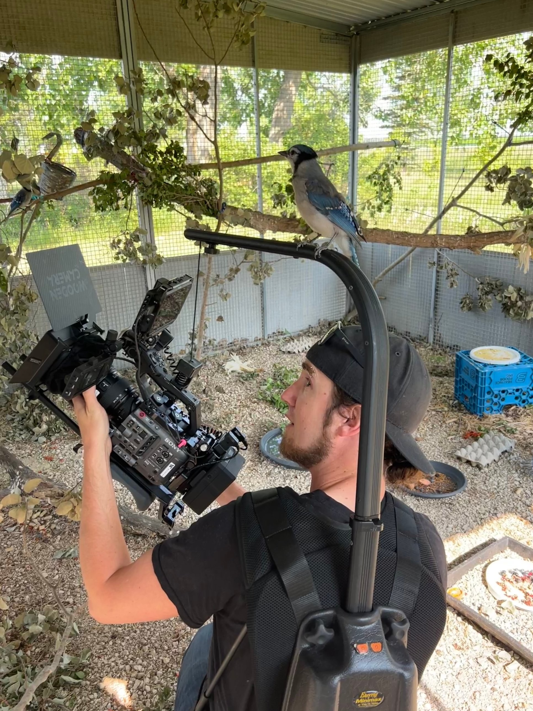

Bio
Martin Roméo LaFrenière est un cinéaste francophone de Winnipeg, au Manitoba. Membre de la Guilde canadienne des réalisateurs (GCR) et récent diplômé de l’ASC Masterclass, il travaille depuis dix ans comme directeur photo, réalisateur, monteur et producteur sur des documentaires, des courts métrages, des vidéoclips et des séries. Parmi ses collaborateurs et clients : Atlantic Records, The Today Show, Six Shooter Records, New Damage Records, CBC, APTN, TFO, Unis TV et Québecor.
Martin a récemment occupé des rôles de création clés dans des productions diffusées à l’échelle nationale : monteur sur Malgré Moi (CBC) et Les Faillites d’Astrid (CBC), réalisateur de séries comme C’est Moi Qui Décide (Unis TV) et Métis Foodies (APTN), et directeur photo sur Champions (TFO) et Histoires de Survie (CBC). Il a aussi été producteur et réalisateur de deuxième équipe pour la prestation de Faouzia avec John Legend à The Today Show, pour le lancement de l’album « Further From The Country » de William Prince, ainsi que pour des courts métrages comme L’Appel du Vide et des documentaires comme Sorry, I’m a Mess.
Télécharger le CV ↓